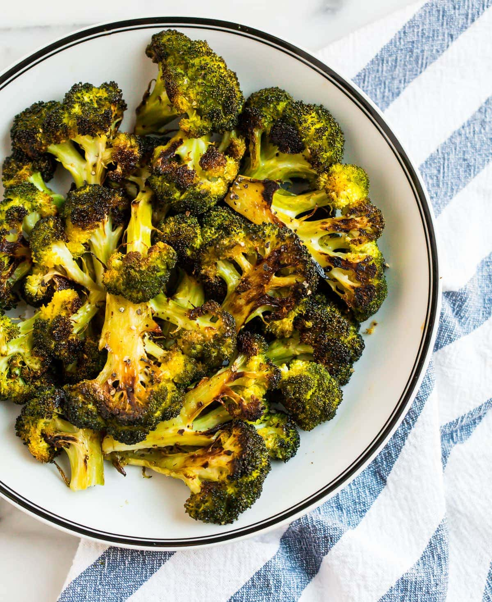

This is a recipe designed to help even the simplest of minds prepare a broccoli side to go with most dishes!
Prep
Make sure the oven is preheated at 400 degrees F.
Ingredients
- Package of broccoli florets
- 1 tblsp olive oil
- 1 tsp salt
- 1 tsp black pepper
Cooking instruction
- Cut the florets from the stalk if necessary.
- Put the florets in a bowl and toss them in the olive
oil, salt, and black pepper.
- Put the florets on a baking sheet.
- Cook in oven for about 20 minutes.